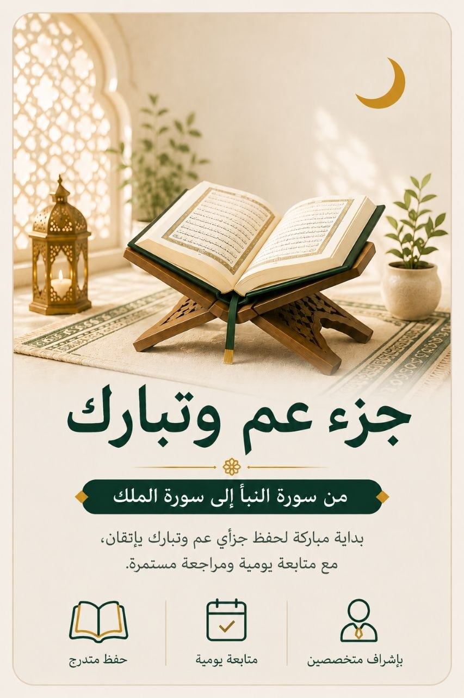
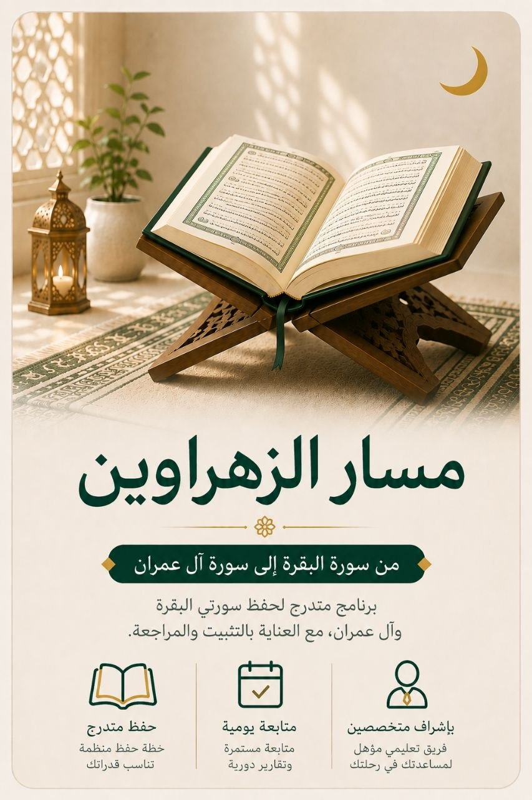
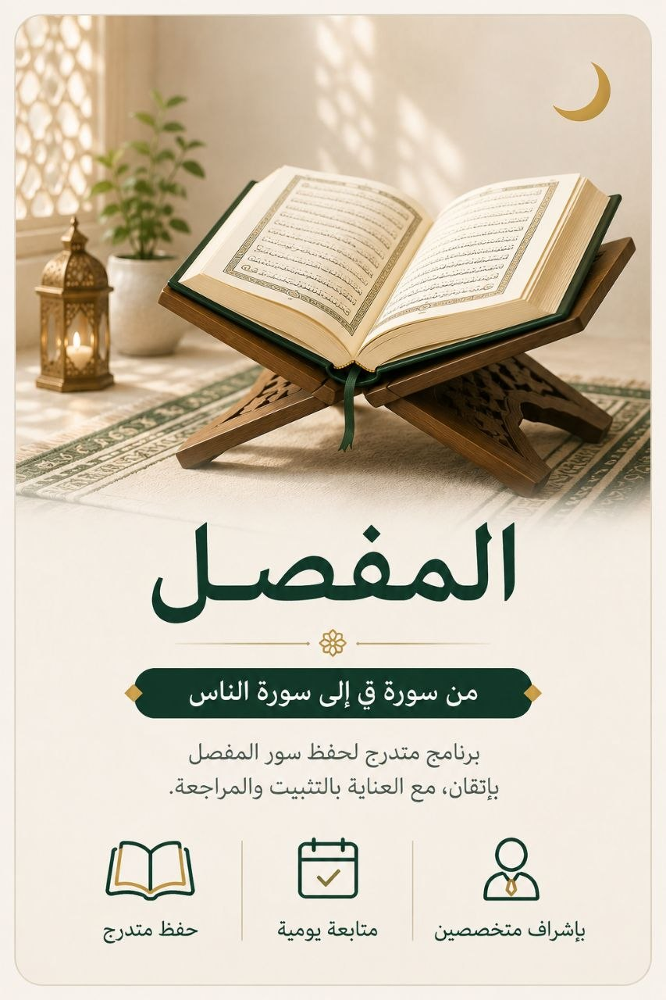
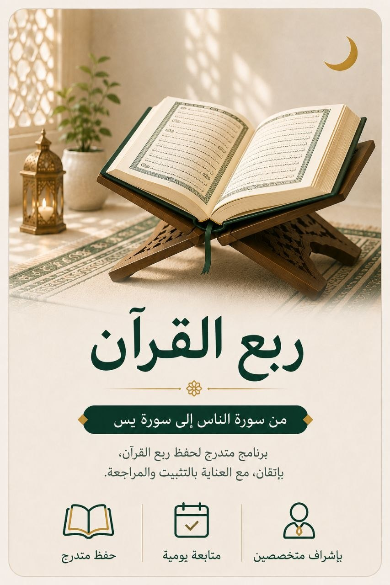
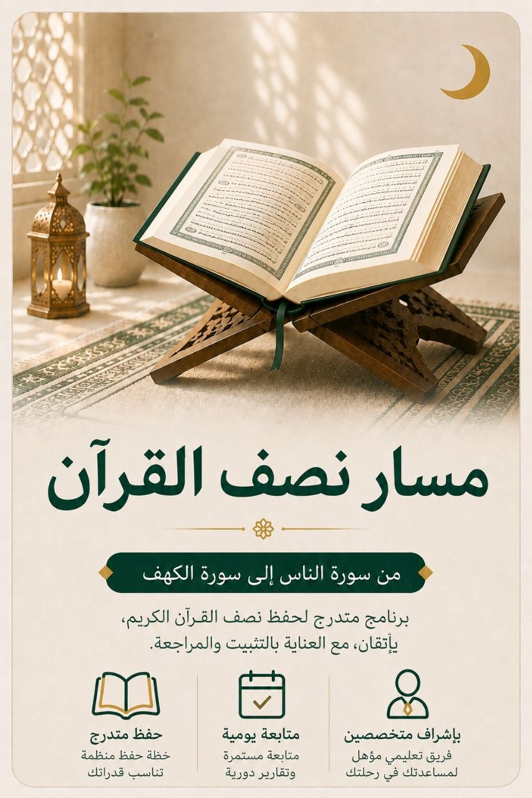
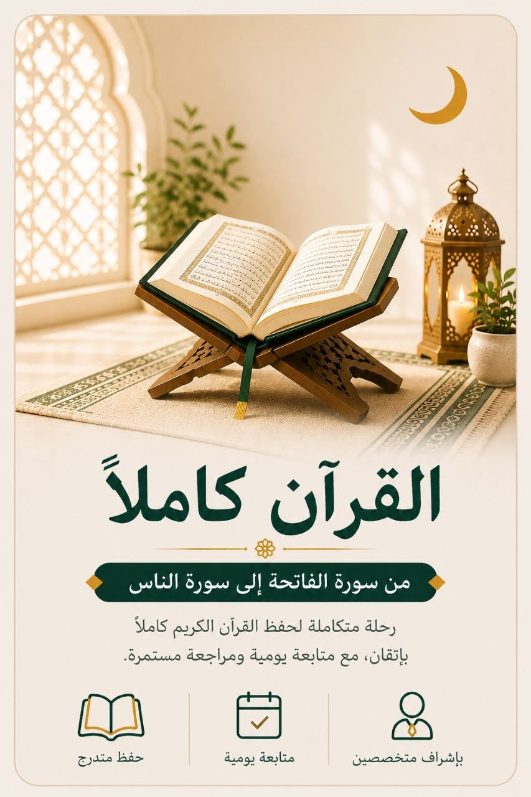

برنامج مرن يعتمد على ثلاثة حصون أساسية، يناسب الطلاب الذين يرغبون في تنظيم رحلتهم بما يتناسب مع وقتهم وأهدافهم، مع الحفاظ على جودة المتابعة والاستمرارية.
لكل طالب ظروفه؛ فصُمم هذا النظام لمن يحتاج مرونة أكبر في وقته دون التفريط في جودة الحفظ والمتابعة.
الطالب يبني خطته بما يناسب جدوله اليومي، بلا التزامات إضافية مرهقة.
ثلاثة حصون أساسية (الحفظ، مراجعة القريب، مراجعة البعيد) تحقق التوازن بين الإنجاز والاستمرارية.
حلقة فرديّة (1:1) مع معلّم يتابع تقدّمك بانتظام رغم مرونة الجدول.
تقرير يومي يوضح إنجازك في الحصون الثلاثة، يصل مباشرة لوليّ الأمر.
يعتمد النظام المرن على ثلاثة حصون أساسية تمنح الطالب مرونة أكبر في بناء خطته التعليمية، مع الحفاظ على الاستمرار وجودة التعلّم.
المقدار اليومي الذي يختاره الطالب بما يناسب وقته وهدفه.
تعهّد آخر ما حُفِظ حديثاً لضمان تثبيته قبل الانتقال للجديد.
تثبيت المحفوظ القديم بمعدّل مرن يحافظ على استمرارية الحفظ.
أربع خطوات بسيطة تفصلك عن بدء رحلتك بالسرعة التي تناسبك.
أنشئ حسابك واختر النظام المرن من صفحة الأنظمة.
حدّد أحد المسارات الستة بما يناسب هدفك ووقتك.
يضبط معلّمك خطتك في الحصون الثلاثة حسب مستواك ووقتك المتاح.
جدول مرن يناسب وقتك، وتقرير يومي يصل لوليّ الأمر.
ستة مسارات متدرّجة، كل مسار بخطّة إتقان كاملة ومدّة متوقّعة واضحة — اضغط أي مسار لتفاصيله.

بداية مباركة لمن يريد إتقان قصار السور.
اكتشف هذا المسار ←
سورتا البقرة وآل عمران — نور لصاحبهما يوم القيامة.
اكتشف هذا المسار ←
من ق إلى الناس، أكثر ما يُتلى في الصلوات.
اكتشف هذا المسار ←
خطوة جادّة نحو حفظ كتاب الله كاملاً.
اكتشف هذا المسار ←
منتصف الطريق إلى شرف حملة القرآن.
اكتشف هذا المسار ←
الغاية الكبرى: أن تكون من أهل الله وخاصّته.
اكتشف هذا المسار ←مدة الحصة 30 دقيقة، وكل الباقات تشمل تقارير يومية لوليّ الأمر.
يناسب الطلاب أصحاب الجداول المتغيّرة، أو من يفضّل البدء بحصون أساسية أقل قبل الانتقال لبرنامج أشمل.
النظام المرن يركّز على ثلاثة حصون أساسية فقط (الحفظ، مراجعة القريب، مراجعة البعيد). لو رغبت في ورد السماع والقراءة اليومية، يمكنك اختيار نظام رسوخ.
نعم، بالتنسيق مع المشرف يمكن الانتقال إلى نظام رسوخ في أي وقت مع الحفاظ على سجلّ تقدّمك.